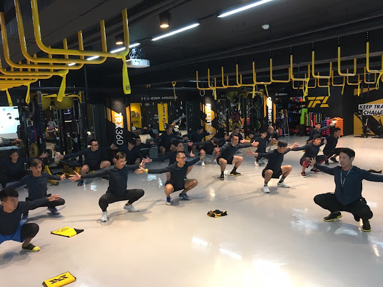
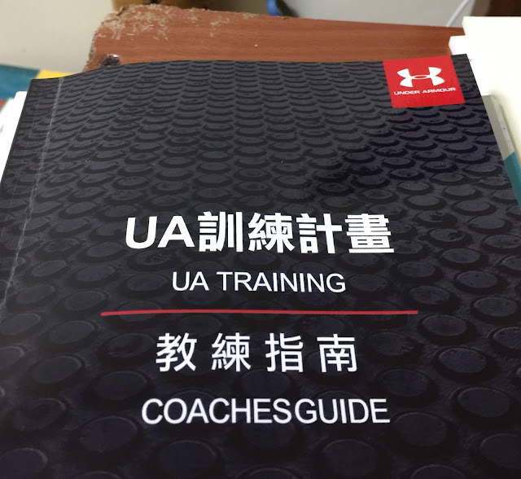
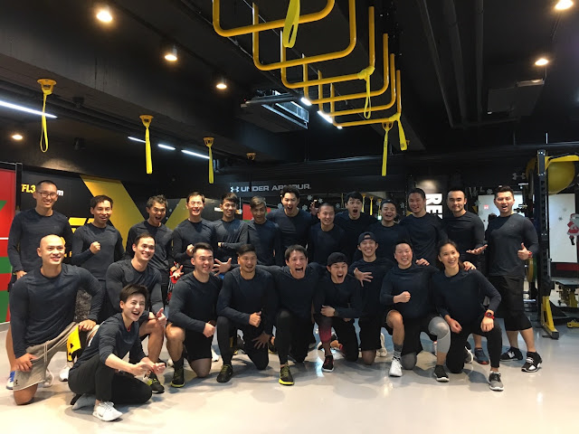
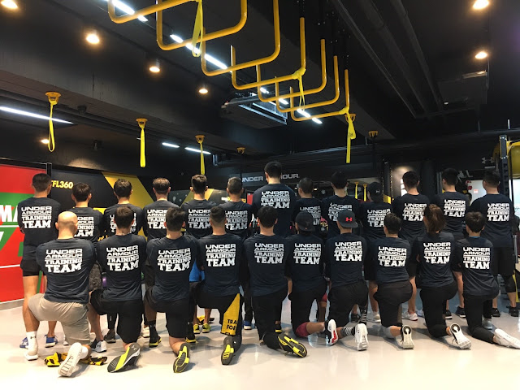

UA Training 培訓課程

過去幾年來一直在台上講課、教課或協助翻譯，已經好久沒有自己坐在台下聽課與跟著教練的指示做訓練了。自從收到 UA Training 課程的大綱與邀請之後一直很期待訓練日的到來。
今天早上四點多起床，騎了十六公里的摩托車到花蓮站搭第一班車到台北，第一個抵達教室，期待上課的心情已經是好久以前的事了，有點令人懷念。在火車上就被窗外明媚的陽光所吸引，所以一把背包放在 TFL 就出門去跑步，在國父紀念館刷圈。速度很好，都在四分速以內，已經好久沒有這種輕鬆維持三分尾速度的感覺了。也許正是這種期待上課心情的延續吧！
今天謝謝 UA 與 Gary 讓我有機會一起學習。離開前答應 Gary 要寫一份接觸 UA Training 的心得，只是個人的意見和分享，如下：

UA 花了兩年多的時間設計這套課程，看來一點都不複雜，但為何要花兩年半？以前也許不懂，但現在愈來愈知道，「簡單化」比「複雜化」難多了。能用簡單的邏輯讓大部分的教練與運動員都受用，實在不簡單。因為聽了大家的回饋之後，幾乎沒有人是反對這套教學體系邏輯的，我自己也很認同，因為這跟我最近與山姆討論的 MBSC 與羅曼諾夫博士教我的東西完全相符。這也是讓我最感覺美妙的地方。
所謂的「科學」，就是尋找規律性。UA 聲稱自己的方法論是：「經過科學驗證的訓練系統。」要能大聲說出這一句話，是要經過多少的淬煉。
在這次上課中，印象最深刻的還有 Gary 在提到教材中的訓練「任務(Mission)」、「方法論(Methodology)」與「訓練系統(Training System)」時說任務就是在談 Why，方法論是 What 的問題，訓練系統則是談 How。這個點很棒，如果之後有機會去分享這個教練系統的核心精神的話，我也想要從這 Why、What 與 How 的問題來切入。
How 的問題是如何訓練。UA Training 直接為大家訂好框架，再開放自由度讓不同的教練針對不同的需求去把訓練的內容填進去，這種方式既直觀又明確。但現在我想到的問題是(在今天一整天我也想試著自己回答的問題)：如何定義這幾個框架？
比如說 Move Better 的定義是什麼？它和 Move Longer 的差異在哪裡？換個問法：Skip 這個動作到底是算在 Move Faster 這個框框裡還是 Move Longer 裡呢？還是都可以，要依訓練時間的長度與組數而定？我們是否需要為這四個框架給設定明確的定義，好讓我們在把動作放進去時有標準可循？
另外是檢測的問題。既然我們希望參與訓練的運動員 Move Better, Faster, Stronger and Longer，跟之前的用語比較起來都多了「er」，那我怎麼讓學員知道他的活動度與穩定度有沒有「變好」、速度有沒有「變快」、力量有沒有「變強」或耐力有沒有變好呢？當然，當次訓練看不出來。但如果有較為長期的訓練(或有機會參與多次的訓練)，「量化」活動度、穩定度、速度、力量與耐力應該是必要的，如此一來學員與教練才能確認：真的有改變。不然就只是感覺，感覺是很虛幻的。
以跑步訓練來說，如果只是看跑步成績有沒有進步，那如何證明是上述 UA Training 的幫助，就算不做這些訓練，我只練跑，成績也會進步啊(但我們都知道事情不是這樣的)；為了讓跑者能認識到自己在活動度、穩定度、力量的進步有助於跑步的運動表現，我認為量化 UA Training 的訓練成果就變得相當重要。就算是一次性的課程，我們也可以吸引他們回到店裡(或其他的合作健身房)再反覆訓練，挑戰自己，追求更好的體能。但前提是要有可量化的指標才知道「更好」在哪、「更好」多少。
UAT：Under Armour Training Team
UAT 意指一個訓練團隊，很好的構想，訓練本來就應該需要團隊合作，不只是運動員要合作，教練也要合作…感謝 UA 也實際付諸行動，相當令人佩服。很高興參與其中。

